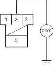
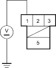

- Check for continuity between the No. 8 terminal of the interlock control unit connector and the No. 5 terminal of the interlock relay (key lock solenoid) connector.

Wire side of female terminals
Is there continuity?
YES - Go to step 27.
NO - Repair open or short in the wire between the No. 8 terminal of the interlock control unit and the interlock relay (key lock solenoid). 
- Check for continuity between the No. 2 terminal of the interlock relay (key lock solenoid) connector and body ground.
INTERLOCK RELAY (KEY LOCK SOLENOID) CONNECTOR

Wire side of female terminals
Is there continuity?
YES - Go to step 28.
NO - Repair open in the wire between the No. 2 terminal of the interlock relay (key lock solenoid) connector and ground (G451), or repair poor ground (G451).
- Turn the ignition switch ACC (ll).
- Measure the voltage between the No. 1 terminal of the interlock relay (key lock solenoid) connector and body ground.
INTERLOCK RELAY (KEY LOCK SOLENOID) CONNECTOR

Wire side of female terminals
Is there voltage?
YES - Repair open or short in  position wire between the No. 3 terminal of the interlock relay (key lock solenoid) connector and the shift position switch.
position wire between the No. 3 terminal of the interlock relay (key lock solenoid) connector and the shift position switch.
NO - Repair open or short in the wire between the No. 1 terminal of the interlock relay (key lock solenoid) connector and the under-dash fuse/relay box.